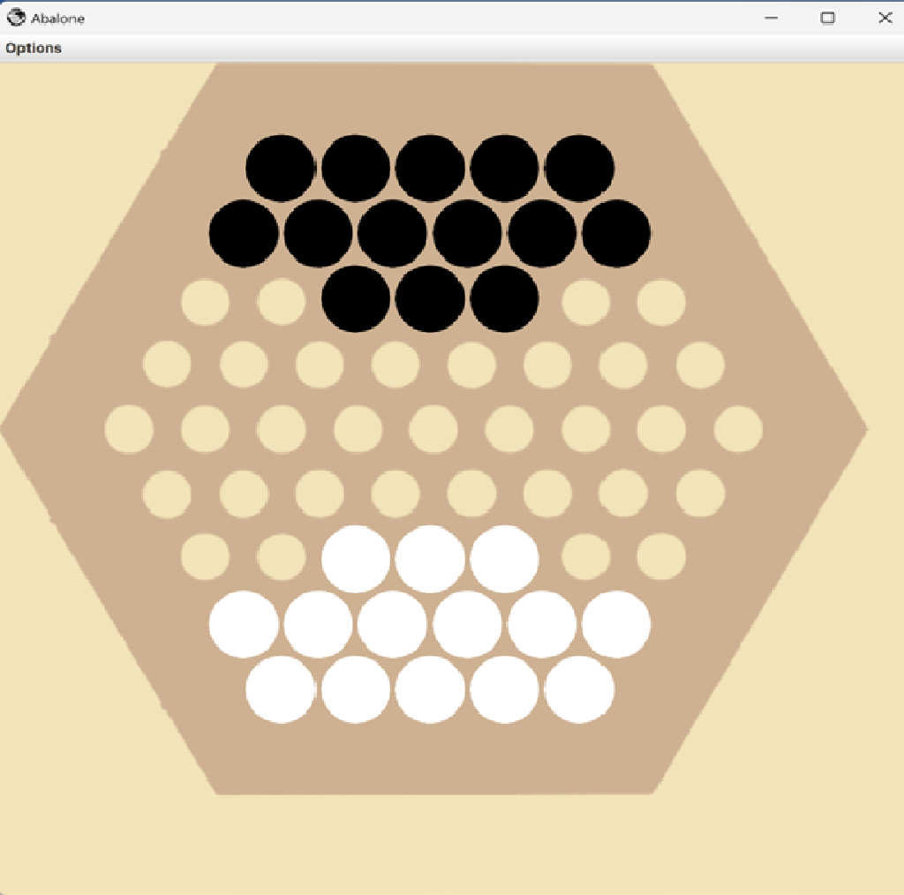
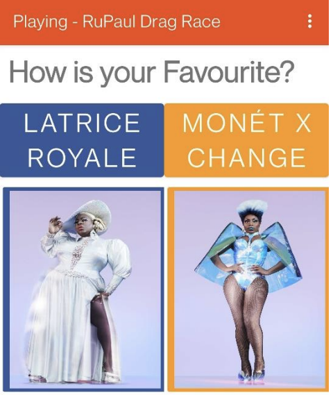

משחק בסגנון אבלון- משחק אסטרטגייה עם אפשרות לשחק אל מול שחקן ממוחשב. השלקן הממוחשב מבוסס תורת הגרפים ועושה שימוש באלגוריתמיקה מוכרת בתחום כדוגמאת BFS,פרים ועץ פורש.
נכתב בשפת JAVA.
לצפייה בתיק פרויקט מלא.משחק לקהילות מעריצים של סדרות שמאפשר להם לדרג דמויות מסדרות, לחלוק תוצרים ולדבר בחדרי צ'אט על המשחק.
נכתב בשפת C#(XAMRINE.APP). בשימוש עם FIREBASE וSQLITE.
תתוכנה שכתבתי בזמן תחילת הקורנה שנועדה לעקוב אחר ההדבקה ולהכניס לבידוד אנשים שנחשפו לחולים מאומתים.

נכתב בשפת C#(win form). בשילוב MYSQL.